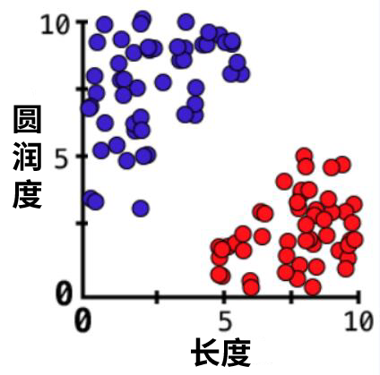

训练集
请看这张图，它包含了所有我们用来训练的数据：
图中有许多点，红点代表草莓，蓝点代表蓝莓。横坐标代表长度，纵坐标代表圆润程度。
因为在上一页中我们只为数据定义了这两个属性，所以我们把数据点画在一个二维平面上。
训练神经网络的过程就像是在寻找一条线，这条线可以完美地来将数据点分成两个部分。

如果我们有三个或更多属性，那么训练过程就像是在找寻一个“平面”，将所有的数据点分割开来。它们在本质上是一样的，只是维度增加了而已。
现在，我们终于可以开始建立我们的神经网络了！